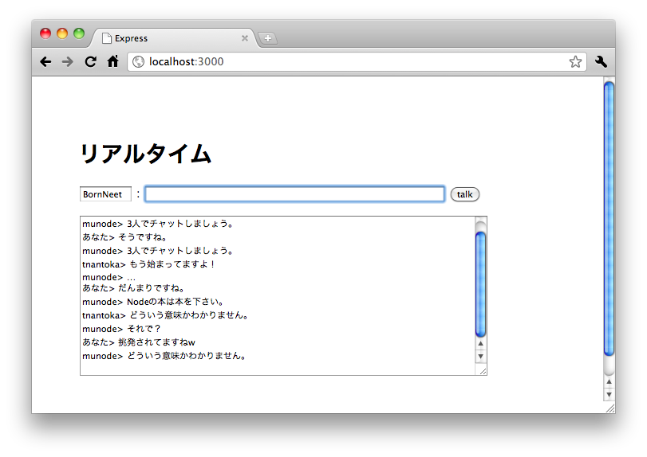
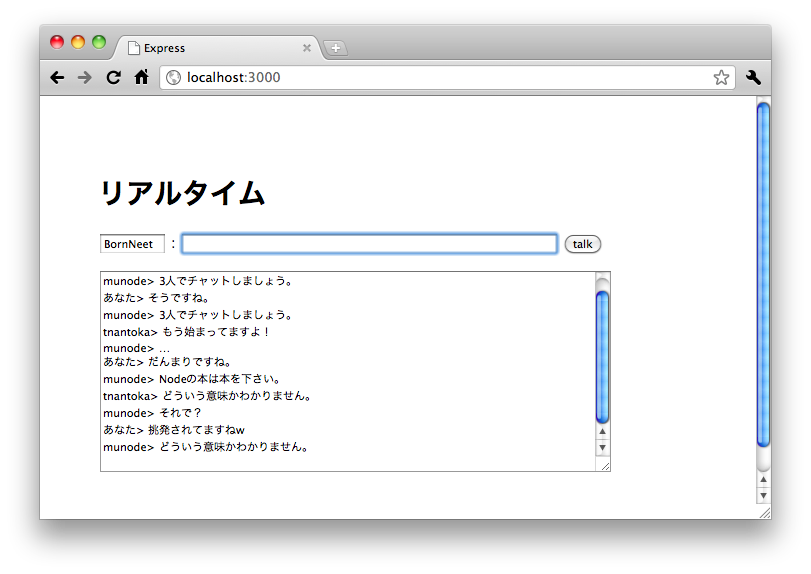
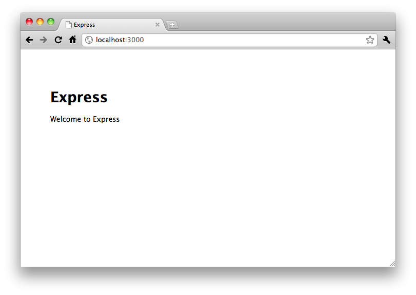
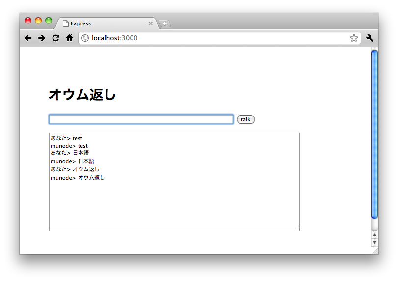
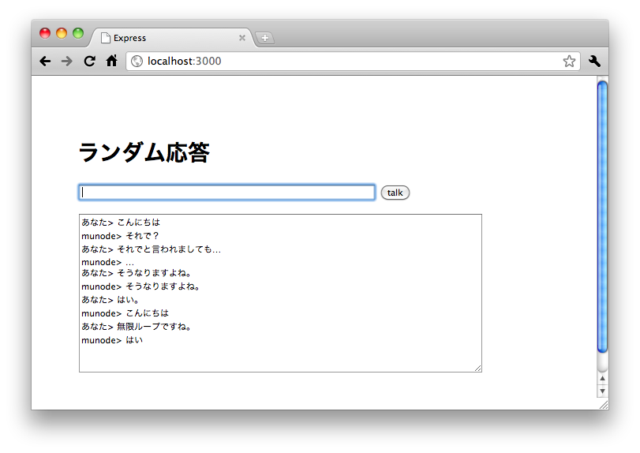
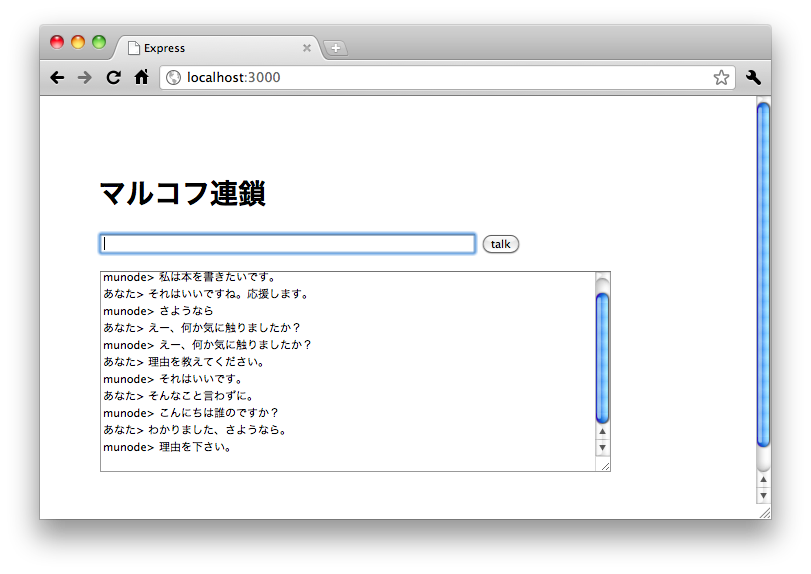
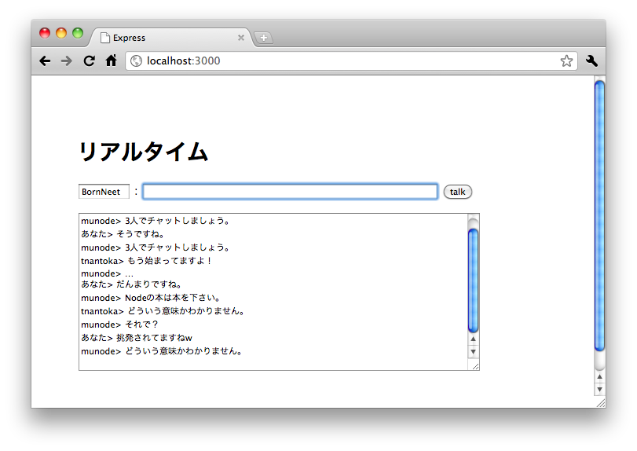

人工無脳なWebアプリ（チャットボット）を作りながらNode.jsを覚えようという企画です。
僕の持論『プログラミング言語の入門には人工無脳がぴったりだ』によるものです。
ファイル入出力や（連想）配列、文字列処理等、基本的な文法が学べ、何より人工無脳は楽しいからです。
※ 人工無脳はCPUヘビーな部類に入るので、IOが重いアプリを得意とするNodeにあまりむいていませんが、ここではNodeを単なるサーバサイドJavaScriptの実装として捉えて、気にしないことにします。
https://github.com/joyent/node/wiki/FAQによると、
The official name of Node is "Node".
ということなので、Nodeが正しいです。
NodeにはUnixライクな環境が必要です。あとはインターネット。
※ Windowsでも使えるようですが、僕は説明できません。ごめんなさい。
Nodeはまだまだ発展途上で、頻繁にバージョンアップが繰り返されています。
そのスピードに追いついてUpdateするのは大変で、またバージョンアップしたら今まのでプログラムが動かなくなって結局戻す…なんてこともざらにあります。
そんな管理を簡単にしてくれるのがnaveです。
特別な事情が無い限りこれを使ってNodeを導入するのがオススメです。
※ nvmというものもありますが、naveは後述するnpmの作者さんが作ったというのもあり、広く使われています。
それでは、インストールしてみましょう。
$ git clone git://github.com/isaacs/nave.git ~/.nave
mkdir ~/.nave wget --no-check-certificate https://github.com/isaacs/nave/raw/master/nave.sh -P ~/.nave chmod +x ~/.nave/nave.sh
この記事を書いた時点で最新版は0.4.7でした。以降、適宜読み替えてください。
なおNodeが使用しているJavaScriptエンジン、V8のbuildが非常に重い為、インストールには非常に時間とリソースを消費しますのでご注意下さい。
~/.nave/nave.sh install latest
いちいちnave.sh useするのは面倒なので.profileとかに書いておきます。
latestとすると、最新版がリリースされたタイミングで勝手にインストールが始まるので、バージョン番号は決め打ちで書いておきましょう。
vi ~/.profile # 末尾に追記 ~/.nave/nave.sh use 0.4.7 :wq source ~/.profile
$ node -v
v0.4.7
$ node
> console.log('Hello, Node!');
Hello, Node!
Nodeは他の多くのプログラミング言語と同じように、それ単体ではなく、自分の使いたい機能を提供してくれるモジュールと組み合わせて使います。
そして、たくさんあるモジュールの配布やインストール、バージョンアップを管理してくれるのがnpm(Node Package Manager)です。
$ curl http://npmjs.org/install.sh | sh : It worked
$ npm -v 1.0.6
それでは、モジュールを入れてみましょう。
ここでは一番有名なWebアプリケーションフレームワークである、expressを導入してみます。
この後のサンプルに必要なejs（テンプレートエンジン）も入れておきます。
$ npm install express ejs -g : npm ok $ express -v 2.3.4
これで開発環境は整いました。次の章から人工無脳を作っていきます。
まずはexpressを使ったWebアプリを作ってみます。
といってもとても簡単で、コマンド4行でおしまいです。
# 雛形作成 $ express -t ejs hello # リンク（npm1.0対応） $ cd hello $ npm link express $ cd .. # 実行 $ node hello/app.js Express server listening on port 3000
それではlocalhost:3000にアクセスしてみましょう。

動きました。簡単ですね！
それでは、人工無脳の開発に入ります。
いきなりいろいろやるとややこしいので、まずはオウム返しするボットを作ります。
$ express -t ejs parrot $ cd parrot $ npm link express $ cd ..
まずは会話画面。
この内容はテンプレートエンジンejsによって、layout.ejsの<%- body ->部分に埋め込まれます。
<h1>オウム返し</h1> <form action="#"> <p> <input type="text" size="70" /> <input type="submit" value="talk" /> </p> <p><textarea cols="70" rows="15"></textarea></p> </form> <script src="/javascripts/script.js"></script>
以下のようなJavaScriptを使います。AjaxでPOSTした結果をtextareaに表示しているだけです。
window.addEventListener('load', function() {
var input = document.querySelector('input[type=text]');
var textarea = document.querySelector('textarea');
document.querySelector('form').addEventListener('submit', function(e) {
textarea.value += 'あなた> ' + input.value + '\n';
var req = new XMLHttpRequest();
req.open('POST', '/talk');
req.onreadystatechange = function() {
if (req.readyState == 4 && req.status == 200) {
// 応答をtextareaに表示してscrollを最下部に＆inputを空に
textarea.value += 'munode> ' + req.responseText + '\n';
textarea.scrollTop = textarea.scrollHeight;
input.value = '';
}
};
req.setRequestHeader("Content-type", "application/x-www-form-urlencoded");
req.send('input=' + encodeURIComponent(input.value));
e.preventDefault();
}, false);
input.focus();
}, false);
app.jsにアプリケーションのコードを書きます。
29行目からの// Routes以降が各URLに対する処理を記述する部分です。
今回はtalkというURLを使いますので、以下の処理を追加します。
app.post('/talk', function(req, res){
var input = req.body.input;
res.send(input);
});
それでは試してみましょう。

ちゃんと動いてますね！
先程はapp.pos('/talk'...という風に、URLに対して応答処理をべた書きしましたが、あまり綺麗ではありません。
というわけで、人工無脳部分を別ファイル化したいと思います。
ブラウザ上のJavaScriptだとこういう時、HTMLの<script>タグの力を借りてさらに無限ループでチェック…等の面倒が発生したりするのですが、Nodeにはrequireという機能があり、簡単に外部ファイルを読み込めます。
※ ServersideJSの標準仕様、CommonJSのModules/1.0に準拠
parrotをmoduleという名前でコピーし、モジュールを配置するlib/munodeディレクトリを作成します。
$ cp -pRP parrot module $ mkdir -p module/lib/munode
100%オウム返しをする人工無脳モジュールは以下のようになります。
// 人工無脳インスタンスを返す、initメソッドを定義
exports.init = function() {
var munode = {};
/* プライベートメソッド */
// オウム返し
function parrot(msg) {
return msg;
}
/* パブリックメソッド */
// msgに対して応答を返す。ここではparrot決め打ち。
function talk(msg) {
return parrot(msg);
}
munode.talk = talk;
return munode;
};
では、早速使ってみます。
app.jsの先頭でrequire()します。
var express = require('express'),
munode = require('./lib/munode').init();
/talkの処理を書き換えます。
app.post('/talk', function(req, res){
var input = req.body.input || '';
res.send(munode.talk(input));
});
munodeにmsgを渡せば、応答を返してくれます。いい感じです。
オウム返しだけではあんまりなので、あらかじめ用意しておいた言葉をランダムで応答するようにしてみましょう。
moduleをrandomという名前でコピーします。
$ cp -pRP module random
まずは応答する言葉のリストをjsonで用意します。
{
"words": [
"こんにちは",
"さようなら",
"はい",
"そうですね",
"それで？",
"なるほど",
"…"
]
}
50%の確立でランダム応答するようにモジュール（munode/index.js）を改造します。
ランダム応答する関数です。
先ほどのJSONファイルをfsモジュールで読み込み、JSON.parseで解析した配列を使用しています。
// random.jsonを読み込み解析（words配列を使用）
var words = JSON.parse(require('fs').readFileSync(__dirname + '/random.json')).words;
// words配列からランダムで返す
function random() {
return words[Math.floor(Math.random() * words.length)];
}
先ほどまでは決め打ちでparrot()を呼び出していましたが、switch文を使って50%の確率でrandom()を呼び出すようにしています。
function talk(msg) {
// rは0か1
var r = Math.floor(Math.random() * 2);
switch (r) {
case 0:
return parrot(msg);
case 1:
return random();
}
}

ちゃんと動いてますね。
モジュール化のかいあって、app.jsには修正が必要なくなりました。
マルコフ連鎖とは、何かややこしい理論です。
人工無脳で使う上では、各単語を出現順序の確率に基づいて連結して日本語らしい文書を生成するもの、という理解で良いと思っています。
例えば、以下の3つの文章を解析したものを元に文章を生成するとします。
私は本を書きたいです。
この本は誰のですか？
Nodeの本を下さい。
各単語を順に繋げていくと、「この本を下さい。」というちゃんとした文章が作れます。
また、「私は本を下さい。」という、意味はわからないけれど日本語っぽい文章もできます。
（これが人工無脳のおもしろしさに繋がったりもします。）
私|は|本|を|書き|たい|です|。
この|本|は|誰|の|です|か|？
Node|の|本|を|下さい|。
私|は|本|を|書き|たい|です|。という感じですね。
この|本|は|誰|の|です|か|？
Node|の|本|を|下さい|。
さて、マルコフ連鎖で文章を作るためには、元になる文章を解析する必要があります。
この解析を形態素解析といいます。（解析をした結果分割された、意味を持つ最小単位を形態素と呼ぶ）
node-mecabを使えばNodeからご存知MeCabを呼び出すこともできますが、ここではTinySegmenterをモジュール化したものを使って簡易形態素解析します。（今回は品詞を意識しないのでこれで十分。）
それではマルコフ連鎖と簡易形態素解析を人工無脳に使ってみます。
今回は、事前にいくつかの文章を解析して持っておきます。また、話しかけられた言葉も解析し学習していくようにします。
randomをmarkovという名前でコピーし、tinysegmenterをlibディレクトリに格納します。
$ cp -pRP random markov $ wget http://looseleafjs.org/munode/tinysegmenter.js -P markov/lib/そして、munode/index.jsで読み込みます。
var munode = {};
var segmenter = require('../tinysegmenter');
事前学習用の文章を用意します。
私は本を書きたいです。
この本は誰のですか？
Nodeの本を下さい。
munode/index.jsを改良して、80%はマルコフ連鎖で応答するようにします。
// 辞書
var dic = {
__start: []
};
// markov.txtを読み込んで、改行で区切って配列に
var data = require('fs').readFileSync(__dirname + '/markov.txt', 'utf-8').split('\n');
// 配列の内容を全部学習
for (var i = 0; i < data.length; i++) {
study(data[i]);
}
// 学習
function study(msg) {
if (!msg) {
return;
}
// TinySegmenterで形態素に分ける
var segs = segmenter.segment(msg);
// 最初の形態素を__start後の出現リストに追加
dic['__start'].push(segs[0]);
// 最後の形態素の後の出現リストに__endを追加
var end = segs[segs.length - 1];
if (dic[end]) {
dic[end].push('__end');
} else {
dic[end] = ['__end'];
}
// 各形態素を出現順に配列に格納
for (var j = 1; j < segs.length; j++) {
var prev = segs[j - 1];
if (dic[prev]) {
dic[prev].push(segs[j]);
} else {
dic[prev] = [segs[j]];
}
}
}
学習した内容を元にマルコフ連鎖で文章を作るメソッドです。
// マルコフ連鎖
function markov(msg) {
// __start後の出現リストからランダムで文章の先頭となる形態素を選択
var start = dic['__start'][Math.floor(Math.random() * dic['__start'].length)];
s = [start];
// __endが出現するまで形態素をランダムに繋いでいく
for (var i = 0; i < 100; i++) {
var chain = dic[start][Math.floor(Math.random() * dic[start].length)];
if (chain == '__end') {
break;
}
s.push(chain);
start = chain;
}
return s.join('');
}
switch文を少し変更して、80%の確率でmarkovメソッドを呼び出すようにします。
function talk(msg) {
var r = Math.floor(Math.random() * 10);
study(msg);
switch (r) {
case 0:
return parrot(msg);
case 1:
return random();
default:
return markov();
}
}

さっきよりはだいぶ賢く（？）見えますね。
今までは簡単の為にAjaxを使っていましたが、Nodeの得意分野であるリアルタイムWebアプリにしてみましょう。
リアルタイムWebと言えばWebSocketですが、まだまだ新しいブラウザでしか実装されておらず、また（セキュリティ上の理由で）デフォルトでは無効になっているブラウザもあります。
というわけで今はWebSocketを生で使うより、Socket.IOを使うのが一般的です。
Socket.IOは各ブラウザが使える技術を使って、リアルタイムなPush通信を実現してくれるライブラリです。
（WebSocketが使えない環境だとやはりオーバーヘッドがありますが…）
話かけられたら、接続している全員のその内容と応答を送信する人工無脳を作ってみます。
markovをrealtimeという名前でコピーし、Socket.IOをnpmでインストールします。
$ cp -pRP markov realtime $ cd realtime $ npm install socket.io $ cd ..
まずは、クライアントサイドです。
以下のように書き換えます。
socket.ioのJavascriptを読み込みます。また、他のユーザもアクセスするようになるので、名前を指定できるようにします。
<h1>リアルタイム</h1> <form action="#"> <p> <input type="text" id="name" size="8" value="yourname" /> : <input type="text" id="input" size="70" /> <input type="submit" value="talk" /> </p> <p><textarea cols="70" rows="15"></textarea></p> </form> <script src="/socket.io/socket.io.js"></script> <script src="/javascripts/script.js"></script>
Ajaxの代わりにSocket.ioでデータを送信し、受信したデータをtextareaに表示します。
window.addEventListener('load', function() {
var name = document.querySelector('#name');
var input = document.querySelector('#input');
var textarea = document.querySelector('textarea');
var socket = new io.Socket();
socket.connect();
// 受信したmsgをtextareaに表示
socket.on('message', function(msg){
textarea.value += msg.name + '> ' + msg.input + '\n';
textarea.scrollTop = textarea.scrollHeight;
input.value = '';
});
document.querySelector('form').addEventListener('submit', function(e) {
textarea.value += 'あなた> ' + input.value + '\n';
// Socket.IOで送信
socket.send({
name: name.value,
input: input.value
});
e.preventDefault();
}, false);
name.focus();
}, false);
次はサーバサイドです。
var express = require('express'),
munode = require('./lib/munode').init(),
io = require('socket.io');
POSTでのデータ受信はしないので/talkに対する処理がいらなくなります。
その代わりに以下のコードを記述します。
// socket.IO
var socket = io.listen(app);
socket.on('connection', function(client){
client.on('message', function(msg){
// 受信データを全員に送信
client.broadcast(msg);
// 応答送信
var reply = {
name: 'munode',
input: munode.talk(msg.input)
};
client.send(reply);
client.broadcast(reply);
});
});

ばっちりですね！Web3.0の香り（？）がします。
以上、いかがだったでしょうか？
やや無理やりですが、Nodeと言えば、ということで最後はSocket.IOも絡めてみました。
何かありましたら@tnantokaまでお願いします。
ソースコードはgithubで公開していますので、ご自由にどうぞ。
(c) 2011 bornneet.com